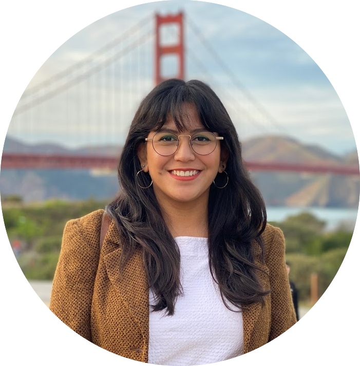

Priscilla San Juan

I am a fourth year PhD student in Tadashi Fukami's lab at Stanford University. I received my Bachelor of Arts in Environmental Science and a minor in Global Sustainability at the University of California, Irvine.
Broadly, I am interested in understanding the processes that shape the gut microbiome, particularly how human-mediated disturbances, impact these communities in wildlife hosts. I am currently examining the effects
of land use change, captivity, migration, and disease on avian gut microbial communities. I am hoping to integrate field, molecular, and computational methods in my work.